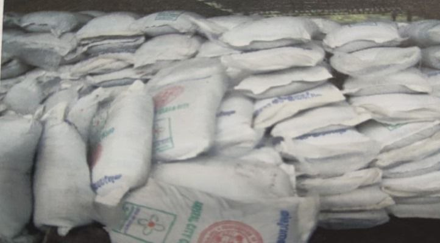
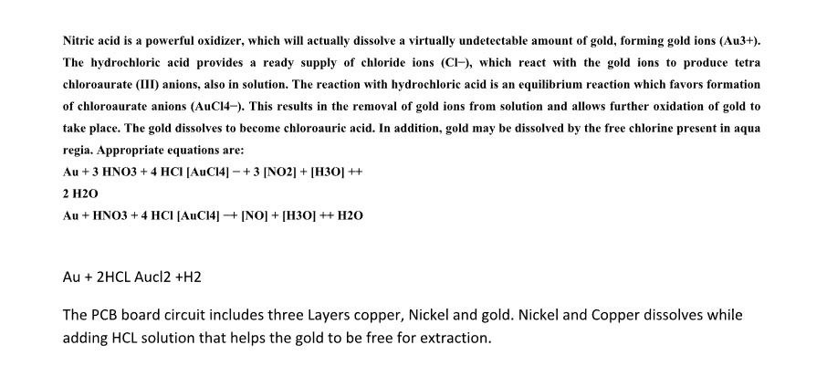

E-Waste
- Windrow Composting :
- The waste collected from the city is brought to the plant in specially designed transportation vehicles , which are initially weighed in a weigh bridge located at the the entrance of the plant.
- The waste is then dumped in the tipping floor at the outer periphery of the plant , where large items like wood, etc., are separated.
- The remaining waste is then heaped in windrows (large rows of approximately 3 meter width and 2 meter height and the length.
- There will be seven rows, each row for each day of the week. These rows are turned every week for 4 weeks
- As time passes, the size of the rows gets reduced due to decomposition of the waste and the resultant volume reduction.
- Hence the number of final rows will be less than the number of initial rows. This period , known as maturation period completes in 28 days, after which the waste undergoes mechanical processing operation.
- The mechanical processing is sieving at three stages, where inorganic items not suited for composting are separated and the organic fraction converted as compost.
- Sieving at each stage is done employing differential sieves, reducing the mesh size at each stage, i.e the first stage sieve employs 36mm mesh, the second stage of sieving are either reused or disposed of at the landfill.
- Windrow Formation :
- Have maximum of 2 meter height, and it can be as long as the site allows.
- As windrow diminishes in size as it degrades, two windrows can be combined as one and this is particularly useful in winter to retain heat, and it also provides more space for further operations.
- At the outer periphery of the plant, seven windrow will be formed one for each day, i.e., one heap for Sunday, one for Monday, so that seven waste heaps will be there at the periphery of the plant, seven windrows will be formed one for each day, one for Monday and so on, so that seven waste heaps will be there at the periphery at the end of the week.
- After seven days the waste which came first is turned and placed in next position in the inner side in order to get space for fresh waste to heap in the outer periphery.
- The same will be adopted for the remaining six day’s waste. After 14 days the waste at second position is turned and placed at third position simultaneous with the waste at first position to second position to provide space for fesh waste as shoen . this process is continued for 4 weeks. (28 days)
- Final Product Manure :
- Bags Packed :

- Manure Sales in Market :
Based on the requirement, manure is packed by manual or automatic packing machine in convenient packs like 1kg, 2kg, 5kg and 50kg bags. Use environment friendly packing materials & sales in market.
- Food Waste to Biogas :
- Place wet organic waste, such as food waste, in a sealed chamber with no air inside.
- As it digests, the waste will release a gas which can be captured and used for cooking.
- The system needs to be airtight and the temperature close to 35˚C.
- Mini Biogas Plant :
- Biogas from Waste Material :
Plant waste that is starchy, sugary or fibrous, fatty substances including animal fat or oil cake from oil seeds; flour swept from the floor of a flour mill; leftover and stale food; damaged or over-ripe fruits; insect damaged grain; non-edible rhizomes of banana or cane; tea leaves; animal dung, abattoir waste, and human excreta.
- Biogas Generation :
- Product :
After 14-21 days, the process will produce biogas and a nutrient-rich soil conditioner called digestate. About 11.5kg starchy material typically yields enough gas to cook the meals of 4-5 people. If the digester is working properly, the digestate will have little smell.
- Advantages :
-
Making biogas from organic material is a good way to manage potentially harmful organic wastes.
-
Cooking with biogas does not produce smoke so it is ideal for the home, and it reduces the need to cut down.
-
The digested slurry can be used wet or dry as a valuable soil conditioner, reducing the need for chemical fertilisers.
- Process for converting E-Waste to Gold :
- POLYFUEL - Experimental Methods of THERMOLYSIS OF WASTE PLASTICS TO PRODUCE LIQUID FUEL :
- The experiments are conducted by taking the known amount of plastic waste and coal fly ash (CFA) as a catalyst in a reactor.
- Heat is supplied to the reactor by heating source. After reaching the reactor temperature up to 160 degree centigrade , vapours starts to generate in the reactor and it continues to generate as the reactor temperature increases.
- The generated vapors are condensed in the condenser.
- The condensed product is collected in the conical flask. This condensed product is called as a Polyfuel.
- Reactor :
- It is a mild steel 9 liter capacity pressure cooker purchased from the market having the dimensions as, Height: 270 mm, internal diameter: 200 mm, outer diameter: 220 mm. The provision for passing the generated vapours from the reactor to the condenser is made by welding the half inch diameter GI pipe with top cover of the reactor.
- The provision for pressure gauge mounting is made on the top cover and pressure gauge is fitted in it for measurement of reactor pressure. Thermowell is provided for inserting the thermocouple/thermometer for measurement of the reactor temperature. The provision of safety valve for the reactor is also made.
- Mild Steel Reactor :
- Copper tube coiled condenser :
- Catalyst Used :
- To get the fast cracking of the plastic waste molecules the catalyst used in this study was the coal fly ash. Coal fly ash contains about 70 % of aluminium and silica in the form of Al2O3 and SiO2 which acts as a catalyst by providing a large surface area on which the waste plastic molecules can sit and so be exposed to high temperature inside the reactor, which breaks them apart resulting in the vapors generation.
- Advantages of Land Fill :
- It cost less than other disposal options.
- A wide variety of wastes are suitable for land fill.
- It frequently offers the only final disposal route for residues arising from end-of-pipe treatment technologies and other waste management options, such as incineration.
- Landfill gas can be collected and utilized for heat and as a low-polluting fuel for energy generation.
- Restore land can provide valuable space for wildlife habitat or leisure use.
- As time passes, the size of the rows gets reduced due to decomposition of the waste and the resultant volume reduction.
- PCB RECYCLING BUSINESS :
- RECOVERY OF GOLD FROM E WASTE :
- E-WASTE to Gold :
